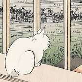

Text
ANTLR is a powerful parser generator.
It's widely used to build languages, tools, and frameworks.
Special symbols, Table
Greek symbols
α, β, γ, ...
Other symbols
caption: arrows, degree sign, ...
↑, ↓, ←, →,†, ...
360°,/,–, ...
Anchor,Image
Hiroshige's cat in a window, 19th Century By
Utagawa Hiroshige

List
Food
Sushi
Ramen
Drink
Coffee
Green Tea